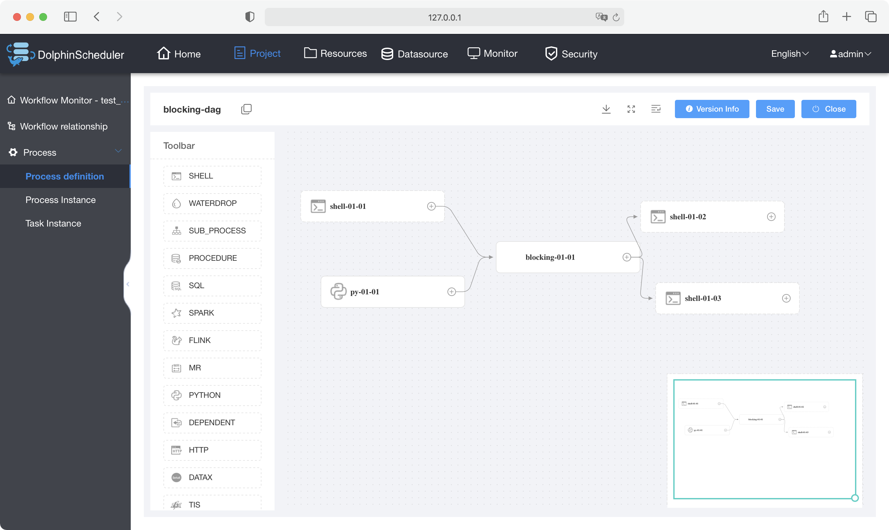
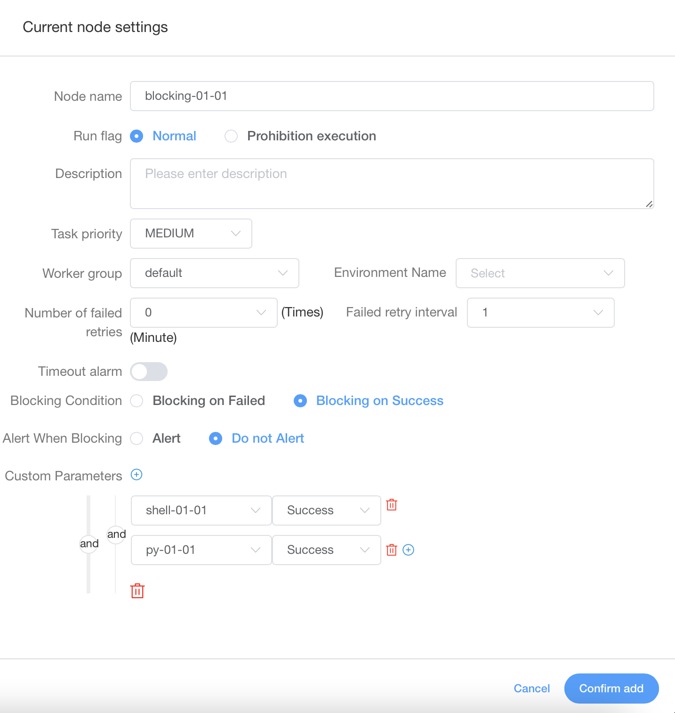
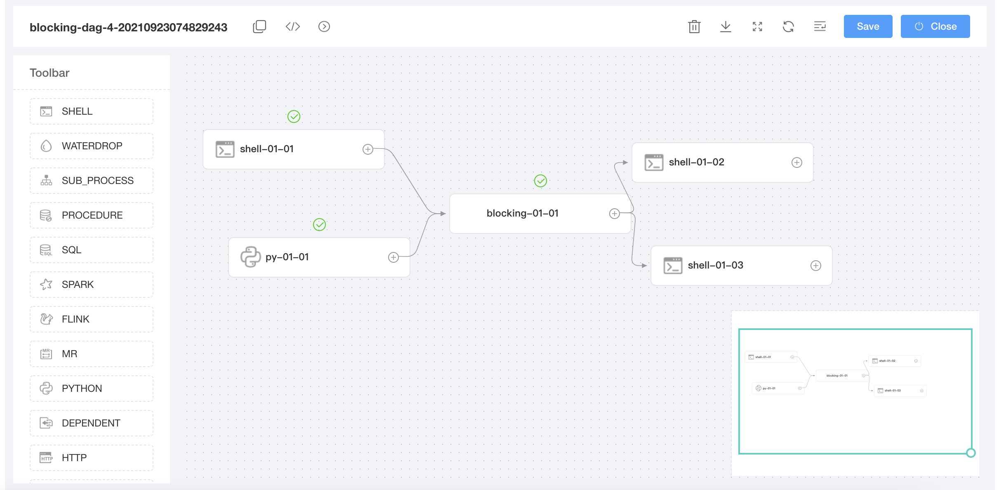
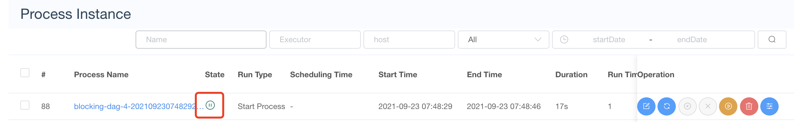
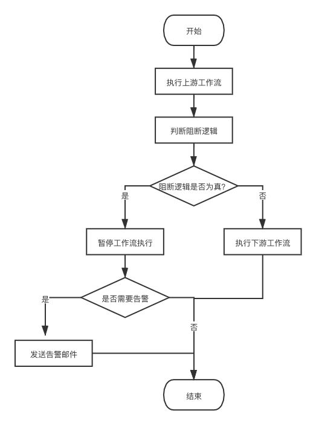

关于阻断类任务
背景
在工作流的执行中，有时我们并不希望从头一直执行到底，我们希望在工作流中间能够设立一些“检查站”，检查上游任务的执行情况，如果检查满足预期，则继续往下执行；如果检查不通过，就需要暂停当前工作流，告警相关人员进行干预，干预成功后再往下执行。我们把这些“检查站”的职能称为阻断类任务，而把“检查站”称为阻断节点。
功能展示
阻断类任务的功能设置大致是这样的：用户往DAG中添加阻断节点后，可以在面板设置阻断时机、是否阻断告警、阻断逻辑。当实际结果满足阻断条件时，工作流就会暂停执行，这时需要进行人工干预；否则，工作流就继续执行。
下面通过一个简单的场景来展示阻断类任务的功能。
假设我们有一个如下图所示的工作流

处在工作流正中的blocking-01-01节点即为阻断节点，假设我是这么设置阻断节点的

我设置的条件是：当阻断任务的前置任务满足阻断条件时，对工作流进行阻断操作，并且当发生阻断时，不进行告警。
现在，我们执行这个工作流，可以发现，工作流在阻断节点处暂停了


此时，用户可以选择重跑或继续执行该工作流。如果设置了阻断告警，相关管理人员还会收到通知邮件。
技术方案选择
当时主要提出了两种方案：
- 基于现有的节点，赋予其阻断功能
- 新增一类节点，专门用于阻断任务
两种方案有利有弊，但是可以从以下两个方面进行抉择：
- 功能性方面（基础功能、长远打算）
- 成本方面（用户成本、开发者成本）
综合考虑，我们选择了第二种方案，即新增一类节点，专门用于阻断类任务。
下面我就从上述两个方面，介绍一下为什么第二种方案更好
功能性方面
基础功能
衡量一个方案，最最基本的，我认为是功能要达到我们的预期。阻断功能的目标是：在工作流执行过程中，如果遇到阻断任务，且满足用户设定的阻断条件，那么工作流就暂停执行，通知用户干预；如果不满足阻断条件，就继续执行。
很显然，两种方案都能够达到这个基本目标。但是，对于第二种方案来说，第一种方案能做的，它可以做，且可以做得更好！试考虑以下场景：
一天老板提了一个需求，要求我在工作流的中设置一个阻断任务，它的上游有3个分支，对应3个独立的子流程，这个阻断任务需要检查上游3个任务的运行情况，其中任意两个任务检查通过就可以继续执行（后续是单分支的），否则需要对工作流进行暂停。
如果使用方案一，我必然要使用条件节点，但是目前DS中的条件节点，成功分支和失败分支都需要设置，且它们必须不一样，这样DAG才可以保存。我为了实现这个阻断任务，我必须建立一个无用的分支（例如使用Shell输出一个hello world）来满足需求。你可能会考虑修改条件节点，让其只有一个分支的情况下才能保存，但是我认为这么做破坏了条件节点进行分支流转的功能。
如果使用方案二，一切就变得简单了，对于这个新增节点（阻断节点），我们就没有这个限制了，这个节点具有逻辑判断功能，我既可以让阻断节点支持后继多分支，也可以支持单分支，即不会破坏现有节点的功能，又完成了我们的阻断目标。
长远打算
从长远来看，第一种方案，相当于把阻断任务当作了节点的属性进行捆绑。假如有一天Apache又发布了一款大数据组件，DS想要支持，在新节点前端编写的时候，依然需要增设阻断的选项。但是使用方案二，就不会存在捆绑问题，一劳永逸，且节点之间各司其职。
成本方面
用户成本
用户成本的话，老实说，两个方案用户成本都差不多。用户都要认识什么是阻断任务，如何去设置阻断任务。
开发成本
老实说，预估第二种方案的代码量会比第一种多一些，但是我觉得这是值得的。因为第二种方案相比第一种更加灵活，能够更好地完成阻断任务。就好像苹果推出了iPad air 4和iPad Pro 2021，iPad air 4 256GB售价749美元， iPad Pro 2021 11英寸128GB售价799美元，二者相差50$，但是多加这些钱可以在满足日常需求的情况下，享受到iPad的极致体验，为什么不多付出这些代价呢？阻断任务也是一样的。
综上，我更推荐第二种方案。
技术方案概述
本部分只会涉及阻断类任务的代码主要设计思路，不会涉及具体的代码，但是文后会给出代码实例的Github。因为ds架构一直在发生变化，在这里讨论具体的代码怎么写没有太大意义。
概念
为了方便后文阐述，这里先说明几个概念：
- 阻断节点本身的状态：阻断节点的执行状态，成功 or 取消 or 暂停等
- 阻断逻辑的状态：阻断节点的前置任务运行结果是否满足用户期望的阻断条件
不难看出，阻断节点本身包含了两种状态。
流程图
带阻断类任务的工作流，执行流程图如下

整个工作流可以以阻断节点为界，分成上游与下游两个部分。首先，先执行上游工作流，当执行到阻断节点时，阻断节点会先判断其前置任务的执行状态是否满足用户设置的预期阻断条件，如果不满足阻断条件，工作流就继续往下执行；如果满足阻断条件，会暂停工作流的执行，并判断用户是否设置阻断告警，如果没有设置，流程结束，否则会调用告警组通知相关人员干预。
代码主要设计思路
JSON定义
阻断节点的JSON定义是与条件节点类似的，区别在于阻断节点有自己本身的参数，在每个节点的JSON定义中，有一个params字段，阻断节点的参数就定义在这里。对于阻断节点，有以下自定义参数：
blockingCondition：阻断时机，取值：BlockingOnSuccess/BlockingOnFailed (阻断逻辑为真阻断/阻断逻辑为假阻断)alertWhenBlocking：是否阻断时告警，取值：true/false
"params": {
"blockingCondition":"BlockingOnFailed",
"alertWhenBlocking":true
}
阻断节点的工作线程类
阻断节点属于ds中“没有实际任务”的节点，条件节点、subProcess节点都是这一类节点。这一类节点都有自己的工作线程类，阻断节点也不例外，也需要一个自己的线程类。
在这个线程类中，主要进行以下操作：
- 获取到阻断节点的参数（需要自己在外部定义一个阻断节点参数类用于映射阻断节点自己的参数）
- 获取阻断节点前置任务的执行结果
- 判断前置任务的执行结果，是否满足阻断节点参数中用户设置的阻断条件（阻断逻辑状态）
- 向工作流调度线程返回阻断节点本身的状态和阻断逻辑状态
阻断节点告警类
这个类比较简单，只需要根据ProcessAlertContent模版设置好内容存库就可以了。后续ds的告警插件会自动从数据库查表并发送告警，这一过程不需要我们干预。
工作流调度线程类
工作流调度线程是整个工作流执行的核心，由于阻断节点的存在势必会干预工作流调度，因此这个类是需要做出改变的。
在原有的工作流调度线程中，主要需要进行以下修改：
分两种大情况讨论
-
如果当前任务不是阻断任务
- 当前任务执行失败：判断其直接后继是否是阻断节点，如果是，继续提交后继任务，不走失败策略
- 其他状态：不用修改代码
-
如果当前任务是阻断任务
- 当前任务执行成功：拿到阻断节点工作线程类传给调度线程的阻断逻辑状态，然后看阻断逻辑的状态是
true还是false。如果是false，什么也不做；如果是true，将当前工作流的状态设置为READY_PAUSE，并且阻止后续任何任务提交。 - 其他状态：不用修改代码
- 当前任务执行成功：拿到阻断节点工作线程类传给调度线程的阻断逻辑状态，然后看阻断逻辑的状态是
- 阻断节点经过分析，不太可能存在失败状态。阻断节点失败有两种可能，一种是DB宕机，另一种是Master宕机。如果是前者，失败的状态不会被写入数据库，此时整个ds也就瘫痪了；如果是后者，会启动容错策略，此时的任务状态不是失败，而是需要容错。
- 当发现满足阻断条件后，阻止后续任何任务提交的原因是：现有的ds架构中，都会维持一个节点提交队列，当这个队列为空时，工作流也就执行结束了，因此，阻止后续任务提交，肯定会在某一个时刻，使这个队列为空，因此工作流肯定可以暂停并停下来。
代码示例
总结
这个项目的难点并不在coding阶段，而是在方案设计阶段。对于一个idea，往往会有多种方案，如何选择一个合适的方案是十分重要的。例如在这个项目中，面临着在现有节点上修改和新增节点两种方案，它们对应着不同的设计方向。我觉得在遇到这种情况时，需要与社区进行充分讨论，使用一种baseline来衡量每一种方案的利弊，最终做出合适的选择。